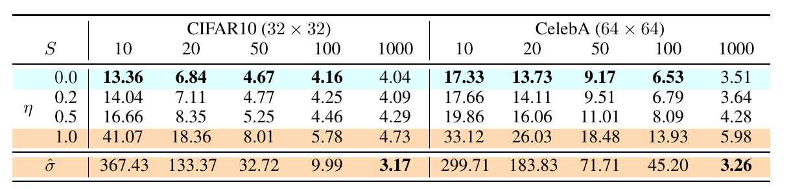

Denoising Diffusion
Implicit Models (DDIM)
Non-Markovian forward, deterministic sampling, probability-flow ODE
Albert No · Yonsei University
2026
Contents
What the DDPM Loss Sees
Freedom to redesign the forward process
The Sampling Bottleneck
Ancestral DDPM sampling: one network call per step.
Quality holds at 1000; naive step-skipping breaks the Markov chain.
Recall — Forward Marginal
One-shot identity.
With $\alpha_n = 1-\beta_n$ and $\bar\alpha_n = \prod_{m\le n}\alpha_m$:
Equivalently $q(x^{(n)}\,|\,x^{(0)}) = \mathcal N\!\big(\sqrt{\bar\alpha_n}\,x^{(0)},\,(1-\bar\alpha_n) I_d\big)$.
Only $\bar\alpha_n$ appears; the individual $\beta_m$ are invisible here.
Recall — The $\varepsilon$-Loss
Simplified DDPM objective.
Draw $n$, draw $X^{(0)}$, draw one Gaussian $\bar\varepsilon$, regress.
No consecutive pair $(X^{(n)}, X^{(n+1)})$ is ever formed.
What the Loss Touches
Training reads the marginals $q(x^{(n)} | x^{(0)})$, never the joint path law.
Loss Invariance
Proposition (the loss sees only marginals).
Let $q$ and $\tilde q$ be two joint laws on $(X^{(0)},\dots,X^{(N)})$ with
Then $\mathcal L_q(\theta) = \mathcal L_{\tilde q}(\theta)$ for every $\theta$, hence identical minimizers.
A whole family of forward processes shares one trained network.
Proof — Change of Measure
Write the loss as an integral against the law it actually queries.
where $\varepsilon(x^{(0)},x^{(n)}) = (x^{(n)} - \sqrt{\bar\alpha_n}x^{(0)})/\sqrt{1-\bar\alpha_n}$ is a deterministic function of the pair.
Everything depends on $q$ only through that marginal. Swap in $\tilde q$: nothing changes. $\blacksquare$
Two Joints, One Marginal
Different couplings of $(X^{(n)}, X^{(n+1)})$; identical per-time marginals.
What We May Change
Frozen.
- Every marginal $q(x^{(n)}|x^{(0)})$
- The schedule $\bar\alpha_n$
- Network $\varepsilon_\theta$ and its weights
Free.
- The coupling across times
- Markov or not
- The reverse sampler built from it
Retrain nothing. Redesign the path, keep the destination.
DDIM in One Sentence
Idea.
A non-Markovian forward family, indexed by $\sigma$, with the DDPM marginals.
- One trained network, a whole dial of samplers.
- No retraining: the weights never see $\sigma$.
Song, Meng, and Ermon, "Denoising Diffusion Implicit Models", ICLR 2021.
A Non-Markovian Forward
Same marginals, tunable stochasticity
Markov vs. Non-Markovian
What We Demand
Fix a schedule $\bar\alpha_1 > \cdots > \bar\alpha_N$ and a noise vector $\sigma = (\sigma_1,\dots,\sigma_N)$, $\sigma_n \ge 0$.
Design targets.
- Marginals: $q_\sigma(x^{(n)}|x^{(0)}) = \mathcal N(\sqrt{\bar\alpha_n}x^{(0)}, (1-\bar\alpha_n)I_d)$
- Tractable one-step conditional $q_\sigma(x^{(n)}|x^{(n+1)}, x^{(0)})$
- Gaussian throughout, so sampling is closed-form
Nothing forces the chain to run forward in time. Build it backward.
Construction Order
Order of construction, not order of time. The marginals come out right by design.
The Mixing Recipe
Given $X^{(0)}$ and the already-drawn $X^{(n+1)}$, set
Key trick: recycle the noise already in $X^{(n+1)}$, rather than drawing it fresh.
Pinning the Coefficients — Mean
Posit $q_\sigma(x^{(n)}|x^{(n+1)},x^{(0)}) = \mathcal N\big(c_0 x^{(0)} + c_1 x^{(n+1)},\ \sigma_{n+1}^2 I_d\big)$ and impose the target marginal.
One linear equation, two unknowns. The variance supplies the second.
Pinning the Coefficients — Variance
Two moment conditions determine both coefficients, leaving $\sigma$ as the only free knob.
The Noise Budget
Fixed total variance, split between recycled and fresh.
The Forward Conditional
Definition (the $\sigma$-family).
$q_\sigma(x^{(n)}|x^{(n+1)}, x^{(0)}) = \mathcal N(\mu_n,\ \sigma_{n+1}^2 I_d)$, with
Together with $q_\sigma(x^{(N)}|x^{(0)}) = \mathcal N(\sqrt{\bar\alpha_N}x^{(0)}, (1-\bar\alpha_N)I_d)$ this defines the whole joint.
Marginal Invariance
Theorem (the $\sigma$-family preserves every marginal).
Let $0 \le \sigma_{n+1}^2 \le 1-\bar\alpha_n$ for all $n$. Under $q_\sigma$,
Consequence: the DDPM-trained $\varepsilon_\theta$ is already the right network for every member.
Proof Outline
Backward induction on $n$, from $N$ down to $0$. Target at each level:
- Base $n=N$: true by construction.
- Whitening: the hypothesis makes $\varepsilon_{n+1}$ standard normal given $X^{(0)}$.
- Two Gaussians add: mean is exact, variances sum to $1-\bar\alpha_n$.
The whole proof is one moment computation, repeated $N$ times.
Step 1: The Base Case
The terminal law is declared, not derived:
Exactly the DDPM terminal law. With $\bar\alpha_N \approx 0$ it is $\approx \mathcal N(0, I_d)$.
Induction starts at the top, because the chain was built from the top.
Step 2: Whitening the Recycled Noise
Assume the claim at level $n+1$. Then, conditionally on $X^{(0)}$,
A fixed affine map of $X^{(n+1)}$: a legitimate function of what we already drew.
$\eta_{n+1}$ is drawn fresh, hence independent of it.
Key trick: standardizing turns "the noise inside $X^{(n+1)}$" into a clean $\mathcal N(0,I_d)$ we can reuse.
Step 3: Two Gaussians Add
Conditionally on $X^{(0)}$, the recipe is a sum of independent Gaussians:
The budget identity $a_n^2 + \sigma_{n+1}^2 = 1-\bar\alpha_n$ is exactly what closes the induction. $\blacksquare$
Proof Recap — One Chain
Recipe, whitening, budget: three moves, any $\sigma$ in range.
Same Pair, Different Triple
Identical.
$\big(X^{(0)}, X^{(n)}\big)$: same joint law as DDPM, for every $n$ and every $\sigma$.
Different.
$\big(X^{(0)}, X^{(n)}, X^{(n+1)}\big)$: the coupling across two noise levels moves with $\sigma$.
The loss only ever looks at pairs. The sampler lives on triples.
How Correlated Are Neighbors?
Given $X^{(0)}$, both deviations are built from the same $\varepsilon_{n+1}$:
$\sigma$ is a correlation dial: $1$ at $\sigma = 0$, $0$ at the maximum budget.
The Correlation Dial
A quarter-ellipse: neighbors decorrelate only as the fresh noise takes over.
A Two-Step Example
Take $\bar\alpha_1 = 0.8$, $\bar\alpha_2 = 0.5$, so the budget is $1-\bar\alpha_1 = 0.2$.
| Fresh noise | Recycled | Correlation | Total variance |
|---|---|---|---|
| $0$ | $0.447$ | $1.00$ | $0.2$ |
| $0.10$ | $0.316$ | $0.71$ | $0.2$ |
| $0.20$ | $0$ | $0.00$ | $0.2$ |
Middle row: half the budget spent fresh, correlation down to $1/\sqrt 2$.
Columns: $\sigma_2^2$, $a_1$, $\rho_1$, $\mathrm{Var}(X^{(1)}|X^{(0)})$. The last never moves; that is the theorem, in numbers.
DDPM Is One Member
Choose the DDPM posterior variance,
Claim: it collapses to the familiar exact posterior. The Markov chain reappears.
A genuine extension: the family contains DDPM, it does not replace it.
Verifying It — Simplify $a_n$
Workhorse identity: $1-\bar\alpha_{n+1}-\beta_{n+1} = \alpha_{n+1}(1-\bar\alpha_n)$, since $\bar\alpha_{n+1} = \alpha_{n+1}\bar\alpha_n$.
Verifying It — Read Off the Mean
Exactly the DDPM posterior mean coefficients. Same mean, same variance, same law. $\blacksquare$
The Other End: $\sigma \equiv 0$
All randomness is front-loaded into $X^{(N)}$; everything after is a fixed map.
The Family at a Glance
$\sigma = 0$.
$\rho_n = 1$. Deterministic given $X^{(N)}$. DDIM.
$\sigma^2 = \tilde\beta$.
Markov. Ancestral DDPM sampler.
Between.
Partial memory. One knob, $\eta \in [0,1]$ scaling $\tilde\beta$.
One trained network, a continuum of samplers.
DDIM Sampling
Predicted clean signal, deterministic map, ODE limit
Training Is Untouched
Corollary of marginal invariance.
All $q_\sigma$ share the DDPM marginals, so the $\varepsilon$-loss is one function of $\theta$.
$\sigma$ is a decoding hyperparameter, not a training one.
The Gap
The forward conditional needs $x^{(0)}$:
At sampling time we have $x^{(n+1)}$ and nothing else. Estimate the missing argument.
Invert the one-shot identity, with the network standing in for the noise.
Predicted Clean Signal
Solve $x^{(n+1)} = \sqrt{\bar\alpha_{n+1}}x^{(0)} + \sqrt{1-\bar\alpha_{n+1}}\,\varepsilon$ for $x^{(0)}$, then substitute $\varepsilon \leftarrow \varepsilon_\theta$:
Every diffusion sampler is, internally, a repeated one-shot guess at the clean image.
Recall — Why That Guess Is Optimal
Tweedie / MMSE.
If $\varepsilon_\theta$ is the exact minimizer of the $\varepsilon$-loss, then $\varepsilon_\theta(x, n) = -\sqrt{1-\bar\alpha_n}\,\nabla_x \log p_n(x)$ and
The guess is the posterior mean: blurry by design, and exactly what the update wants.
Jump Back, Re-Noise
One step, two moves: jump to the guess, then re-noise part of the way back.
The Recycled Term Collapses
The recipe asks for $\varepsilon_{n+1} = \big(x^{(n+1)} - \sqrt{\bar\alpha_{n+1}}\,x^{(0)}\big)/\sqrt{1-\bar\alpha_{n+1}}$. Substitute the estimate:
An identity, not an approximation: one network call supplies both terms.
The DDIM Reverse Update
$\sigma_{n+1}^2 = \tilde\beta_{n+1}$.
Ancestral DDPM sampler, recovered exactly.
$\sigma_{n+1} = 0$.
Deterministic DDIM. No $\eta$ is ever drawn.
Sampling Algorithm
- Choose a decreasing subsequence $N = n_S > \cdots > n_1 > n_0 = 0$ and noises $\sigma$.
- Draw $X^{(N)} \sim \mathcal N(0, I_d)$.
- For $s = S, S-1, \dots, 1$: evaluate $\varepsilon_\theta(X^{(n_s)}, n_s)$, form $\widehat X^{(0)}$, apply the update to reach $X^{(n_{s-1})}$.
- Return $X^{(0)}$.
$S$ network calls, and $S$ is ours to choose.
The Deterministic Map
Setting $\sigma \equiv 0$ and writing $\varepsilon_\theta = \varepsilon_\theta(X^{(n+1)}, n+1)$:
- Only $\bar\alpha$'s and one network call per step.
- Invertible in principle: run the recursion upward.
- Diversity now comes from $X^{(N)}$ alone.
A fixed function $\Phi: X^{(N)} \mapsto X^{(0)}$. Same seed, same image, every time.
Why Steps Can Be Skipped
Scan the update: it contains $\bar\alpha_n$ and $\bar\alpha_{n+1}$, and no $\beta$, no $\alpha$.
So any decreasing subsequence of times is a legal chain: replace $\bar\alpha_n$ by $\bar\alpha_{n_{s-1}}$.
DDPM's update needs $\beta_{n+1}$, which is tied to adjacent times. DDIM's is not.
Striding the Chain
Cost counts $\varepsilon_\theta$ calls: a stride of $20$ buys a $20\times$ speedup.
The training grid and the sampling grid have come apart.
Two Sources of Error
Approximation.
$\varepsilon_\theta \ne$ true score. Fixed by training; unaffected by step count.
Discretization.
Finite steps along a continuous trajectory. Shrinks as $S$ grows.
Cutting steps inflates only the second: the payoff is a better solver.
Only the second is a solver question. Which continuous object does it solve?
The Right Coordinates
Rescale the state and reparameterize time by the signal-to-noise ratio:
$\tau_n$ is the noise-to-signal ratio: $0$ at clean data, $\to\infty$ as $\bar\alpha_n \to 0$.
Choosing coordinates is the whole trick: the update becomes a straight line in them.
DDIM Is Exactly Euler
Proposition (exact Euler form).
The deterministic DDIM update is, without any approximation,
i.e. one explicit Euler step of $\;\dfrac{dY}{d\tau} = \varepsilon_\theta$.
Discretization error is now a solver question with a century of answers.
Proof Outline
- Divide the deterministic update by $\sqrt{\bar\alpha_n}$.
- Recognize both coefficients as $\tau$'s.
- Take $\max_n|\tau_n - \tau_{n+1}| \to 0$ and change variables back to $X$.
Key trick.
Rescale by $\sqrt{\bar\alpha_n}$: the guess $\widehat X^{(0)}$ becomes a shared anchor and drops out.
Steps 1 and 2 are algebra and are exact; only step 3 is a limit.
Step 1: Divide Through
Start from $X^{(n)} = \sqrt{\bar\alpha_n}\widehat X^{(0)} + \sqrt{1-\bar\alpha_n}\,\varepsilon_\theta$ and expand $\widehat X^{(0)}$:
Dividing by $\sqrt{\bar\alpha_n}$ makes $\widehat X^{(0)}$ appear literally, so the guess is the common anchor.
Step 2: Read Off the $\tau$'s
The bracket is $\widehat X^{(0)}$ in $Y$-coordinates: same at both endpoints, so it cancels.
In $(Y,\tau)$ the update is a straight segment of slope $\varepsilon_\theta$. No approximation used.
Step 3: Back to $X$ and $t$
Let the grid refine. With $X_t = \sqrt{\bar\alpha_t}\,Y_t$, the chain rule and $\bar\alpha_t' = -\beta_t\bar\alpha_t$ give
Proof Recap — One Chain
Divide, read, refine, rescale.
The Same ODE in Score Form
Substitute the noise-score identity $\varepsilon_\theta(x,t) = -\sqrt{1-\bar\alpha_t}\;s_\theta(x,t)$:
For the VP-SDE, $f(x,t) = -\tfrac{\beta_t}{2}x$ and $g(t) = \sqrt{\beta_t}$, so this reads $f - \tfrac12 g^2 s_\theta$.
DDIM was never VP-specific; it is a general object in disguise.
The Probability-Flow ODE
Theorem (Song et al., 2021).
Let $dX_t = f(X_t,t)\,dt + g(t)\,dW_t$ have marginals $p_t$. Then the deterministic flow
started from $x_0 \sim p_0$ has marginal law $p_t$ for every $t$.
Song, Sohl-Dickstein, Kingma, Kumar, Ermon, and Poole, ICLR 2021.
Proof Outline
Both dynamics push mass around. Compare the PDEs their densities obey.
- Fokker–Planck for the SDE; rewrite the diffusion term as a divergence.
- Continuity equation for the ODE; match velocity fields.
- Same PDE, same initial data, so the same solution.
Key trick.
$\nabla p = p\,\nabla\log p$ turns the Laplacian into a divergence: diffusion becomes transport.
Nothing here is special to VP; $f$ and $g$ stay general.
Step 1: Diffusion as Transport
Fokker–Planck for the SDE:
Now $\Delta p_t = \nabla\cdot(\nabla p_t) = \nabla\cdot\big(p_t \nabla\log p_t\big)$, so
Step 2: Match the Velocity
A deterministic flow $\dot x = v(x,t)$ transports its density by the continuity equation $\partial_t \rho_t = -\nabla\cdot(v\rho_t)$.
With $\rho_0 = p_0$ and uniqueness of the linear transport equation, $\rho_t = p_t$ for all $t$. $\blacksquare$
Why Half the Score
Reverse SDE drift: $f - g^2\nabla\log p_t$. PF-ODE velocity: $f - \tfrac12 g^2\nabla\log p_t$.
The ODE only cancels the forward spreading; the reverse SDE also cancels its own.
A Continuum of Reverse Dynamics
Every $\lambda$ has marginals $p_t$: extra drift pays for extra noise.
Discrete $\sigma$-family and continuous $\lambda$-family are the same idea, twice.
Three Dynamics, One Marginal
Different paths, different couplings across time, identical $p_t$ at every $t$.
Different Paths, Same Cloud
Consequences
Acceleration, inversion, interpolation
Why Fewer Steps Work
Once sampling is an ODE, accuracy is governed by solver order, not by noise.
| Solver | Object | Global error |
|---|---|---|
| Euler–Maruyama | SDE | $O(\Delta t^{1/2})$ strong |
| Explicit Euler = DDIM | ODE | $O(\Delta t)$ |
| Heun, DPM-Solver | ODE | $O(\Delta t^2)$ and better |
Lu, Zhou, Bao, Chen, Li, and Zhu, "DPM-Solver", NeurIPS 2022.
Quality vs. Step Count
FID after $S$ steps. $\eta = 0$ is DDIM; $\eta = 1$ and $\hat\sigma$ are DDPM.

- CIFAR10 at $S = 10$: DDIM $13.36$, DDPM $\hat\sigma$ $367.43$
- Same weights, same loss: only the sampler changed
Song, Meng, and Ermon, "Denoising Diffusion Implicit Models", ICLR 2021 — Table 1.
Inversion: Images Get Latents
Impossible for DDPM: its map is one-to-many by construction.
Inversion in Practice
Running the update upward needs $\varepsilon_\theta(X^{(n+1)}, n+1)$, the value we do not yet have.
Locally first-order accurate; error accumulates over the chain, so round trips drift.
Enables real-image editing, and explains why edits degrade with too few steps.
Interpolation: Why Linear Fails
For $X \sim \mathcal N(0, I_d)$ with $d$ large, $\|X\| \approx \sqrt d$, so the mass sits on a thin shell.
The linear midpoint sits off the shell: an input the model never saw.
Result: washed-out midpoints. Interpolate along the sphere instead.
Spherical Interpolation
$X_\lambda = \frac{\sin((1-\lambda)\omega)}{\sin\omega}X + \frac{\sin(\lambda\omega)}{\sin\omega}X'$, with $\omega$ the angle between them.
DDPM or DDIM?
Two ends of the dial: $\sigma_{n+1}^2 = \tilde\beta_{n+1}$ versus $\sigma \equiv 0$.
| DDPM sampler | DDIM sampler | |
|---|---|---|
| Steps | Hundreds to $1000$ | Tens |
| Map | Stochastic, one-to-many | Deterministic bijection |
| Diversity per seed | High | None |
| Best at large budget | Slight edge in fidelity | Comparable |
Same weights either way, so decide per use case, at sampling time.
Recap
- The $\varepsilon$-loss reads only marginals $q(x^{(n)}|x^{(0)})$.
- A $\sigma$-indexed non-Markovian family shares those marginals.
- $\sigma^2 = \tilde\beta$ gives DDPM; $\sigma = 0$ gives a deterministic map.
- Deterministic DDIM is exact Euler for $dY/d\tau = \varepsilon_\theta$, i.e. the PF-ODE.
- Payoffs: strided sampling, inversion, spherical latent interpolation.
Training fixes the marginals. Sampling is a solver choice.
Lecture 5: Guidance & Discrete Diffusion